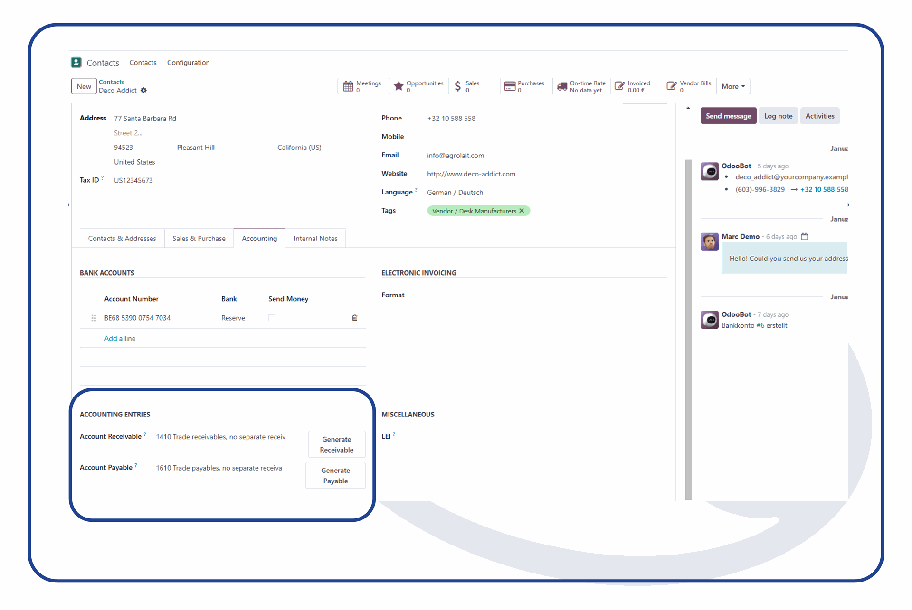

Debtor & Creditor Numbers - Automatic Assignment of Customer & Vendor Numbers
Automate the allocation of account numbers for customers and vendors based on your numbering sequence.
Key Features:
-
Automatic creation of accounts
-
Flexible configuration of numbering sequences
-
Multi-company support

Perfect for orderly and efficient accounting.
For more detailed Information visit us at ecoservice.de or check
out our modules at ecoservice.de/shop